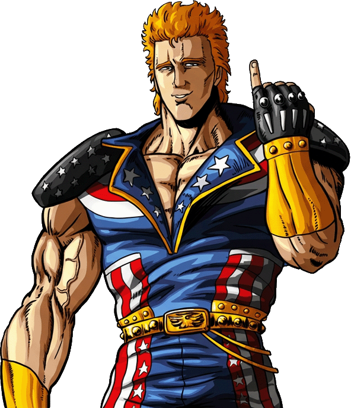

Ain lotta unicamente per racimolare il denaro necessario a costruire un dirigibile e portare la piccola Asuka, sua figlia adottiva, nelle leggendarie terre verdi. Sotto la maschera del cinico mercenario nasconde un cuore d'oro. Il suo pugno d'acciaio, sebbene non appartenga a nessuna scuola tradizionale, è in grado di compiere imprese leggendarie grazie a una forza di volontà incrollabile.